YouTube Lights can benefit you tell a story. Finding good lighting for your videos can be perplexing. Sometimes your shot isn't bright enough, or maybe it's too shadowy. Sometimes the colour temperature isn't accurate, or the fogginess is so harsh that you can hardly see what is the target entity. If you’re just beginning out with video production, lighting your video shoot can be fiddly.
According to Pew Research, YouTube is the most popular online platform in America also eMarketer predicts the number of U.S. YouTube watchers will upturn to 228.1 million by 2024 , up from 214.9 million in 2020. Providing useful, entertaining and informing content is the base to grow on YouTube. But do you know, the mode needs to be as clear as your message should be. If your video lacks good lighting no one is going to watch it. And all your efforts in the video production may go in vain. 37% of Millennials aged 18 – 34 are binge-watching YouTube daily.
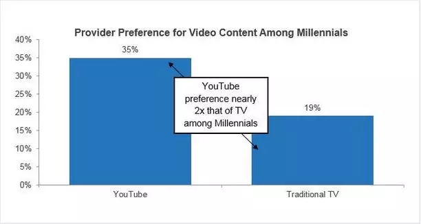
Image source- Comscore
Antagonistic to the commonly held belief that YT and TV sit on reverse ends of the content spectrum, a study found that 1 in every 8 Millennials considers this platform their ideal destination for watching “current season TV shows”.
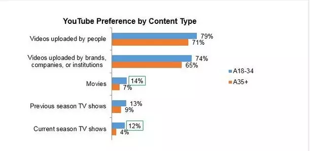
Image source- Comscore
To leverage the platform to its potential, you need to read this article, to get the best knowledge on choosing video light.
Cameras need far more lighting to produce a quality image than you might think. In fact, good lighting is one of the most important fundamentals to recording a great video, potentially even more significant than your camera setup. You have to make sure you create your video content so it’s mobile-friendly.Over 70% of YouTube videos are watched on mobile devices, so you need to be sure you shoot videos with optimal lighting, so users with smaller screens can still get the full experience.
Good video lighting encompasses much more than whether or not the viewer grasps your subject and convinces the algorithm to rank your video higher in YT search pages.
Wondering, what is the relation between video lighting and the video ranking?
The algorithm also gives preference to high-quality videos when indexing content in accordance with relevance. In fact, many creators buy YouTube subscribers to get their video promoted by it.
Also read: YouTube Equipment for Beginners
Contents
- 1. How do you want the viewers to feel?
- 2. What do you want to highlight?
- 3. Why do you need lighting for YouTube videos?
- 4. Helps to set viewer’s mood
- 5. Natural light
- 6. Select a lighting type
- 7. Set an apparatus of three pointing light
- 8. Select your light colour temperature
- 9. Look out for shine/glare
- 10. Best Types of video light for YouTube Videos
Bearing in mind, how to get the perfect lighting for videos, ask yourself:
How do you want the viewers to feel? –
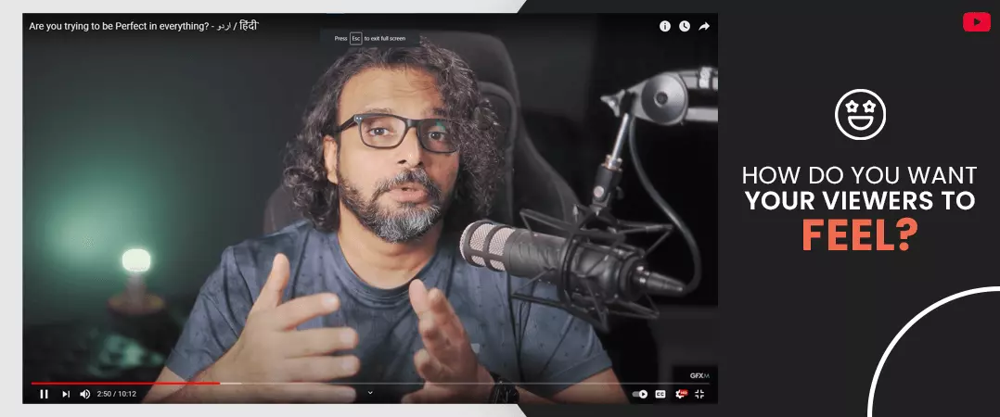
Diverse kinds of lights, with changeable styles and intensity, can give audiences tonal signals. You should think about how your lighting can help express the frame of mind that reflects your message.
What do you want to highlight? –
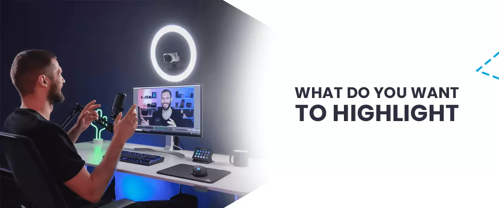
Contrast in lighting can logically draw onlookers’ eyes. For example, high contrast can make individuals or items highlighted.
Why do you need lighting for YouTube videos?
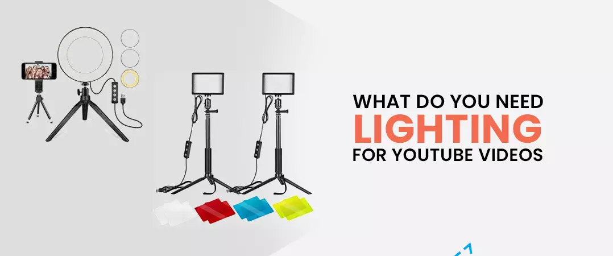
There are numerous reasons:
1. Perfect video light makes you look professional
If you want your audience to keep watching or increase audience retention percentage, you need to appear like you know what you’re doing. Poor lighting doesn’t just make it hard to see, it gives a bad impression of your skills.
2. Helps you to create effects, evoke different modes and overcome shadows
Using video light effectually will make a colossal difference, no matter whether you're shooting an event or a straightforward interview. A decent light allows you to balance exposure levels in a scene, remembering more elements in shadows and highlights. Also, once you get contented with your lights, you can start creating effects, using diverse colours to conjure different moods or even to simulate stuff like a flickering TV or the blue flashing light of an emergency vehicle.
3. Helps you to highlight the target object/person
If you are demonstrating makeup or doing a product demonstration, good lighting is crucial for your viewers to see colours and practices clearly. Good lighting draws your target audience to what you want them to look at. Contrast-y lighting can make people or objects stand out.
4. Helps to set viewer’s mood
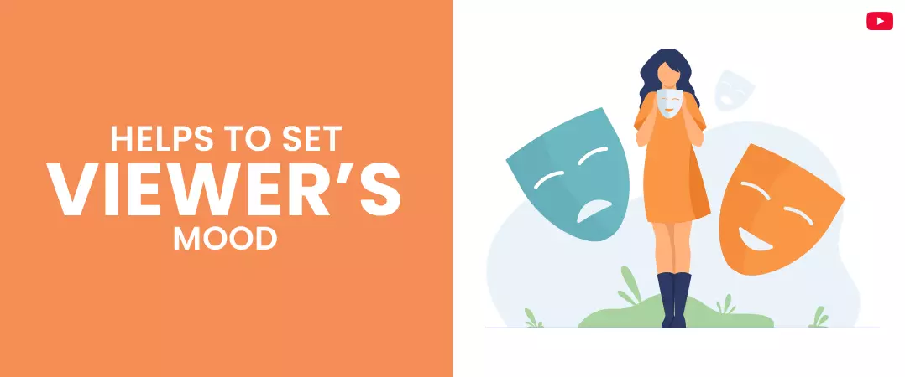
To create a mood that is in line with your message, you can use, different lighting styles and light intensity and give your audience subtle signals, and make them feel how you want them to.
Video Lighting is one of the most important things, and also one of the most challenging things to get right.
Also read: Start a Successful YouTube Channel
If you still haven’t invested time or money into YouTube lighting setup, it’s time to start.
The good news is that you don’t have to be very skilled to get great lighting! Now, we will discuss, what kind of lighting for YouTube videos you need to produce masterpieces.
We’ll help you through the procedure to get the perfect lighting for all your videos, regardless of your budget or capability.
Get the perfect video lighting setup
1. Natural light
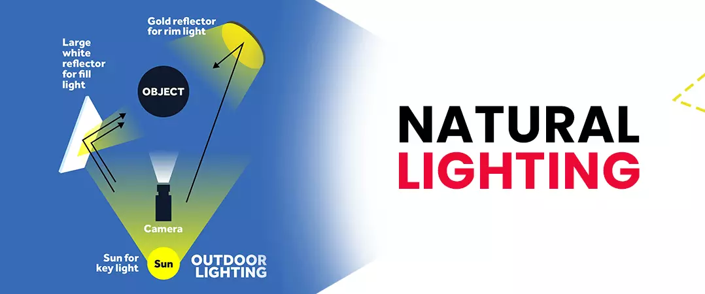
The sun is an incredible (and free) source of light.
Some of the exceedingly engaging videos use a simple lighting setup or natural light. If you’re inside, you can use everyday lights like a lamp, a simple lighting kit, or natural light from a window. But be cautious that climate can change swiftly and affect your lighting. That lovely sunshine can vanish in an instant. Even it doesn’t dissolve perpetually, repetitively shifting light as the sun goes behind clouds and re-emerges can mess up your lighting setup. Be organized for any variations or make modifications to keep your lighting stable.
The best sunlight naturally happens during the early morning and late afternoon, so avoid shooting between 11 am and 3 pm as sometimes the overhead sunlight can produce a fault-finding effect.
Natural lights vs artificial lights
Natural light or lamps are virtuous if you have inadequate resources. But artificial lights can give your video a more polished feeling. Keep in mind that lighting sources don’t need to be byzantine or expensive. Moreover, the light needs to come from the right track. Although YouTubers often rely on natural light when creating their videos, turning to daylight can bound your recording times.
Artificial light is typically achieved with a bulb, a stand and a light modifier. The objective of using it is to attain a natural light look in a controlled setup. If you want to get the freedom to record wherever and whenever you want, the greatest thing to do is to purchase few great artificial light sources.
Keep in mind:
- You need to have as much control over lighting as possible. If you pick natural light, make sure it illuminates your face uniformly and doesn’t cause unsolicited shadows.
- Windows are your best friend when finding good lighting for videos indoors during the daytime. And they should preferably be in the shadows to give you a soft, diffused light.
- Make sure the window is generally in front of you when recording. This will give you the balanced lighting you’re considering for.
- When recording videos outdoors in the sun, it’s important to avoid harsh lighting. Look for spots in the shade to shoot your videos.
- You can use a reflector such as the Hypop Large 5-in-1 Reflector Disc (43"/110cm)
- With reflector stand to make it easier to position your reflector impeccably
2. Select a lighting type
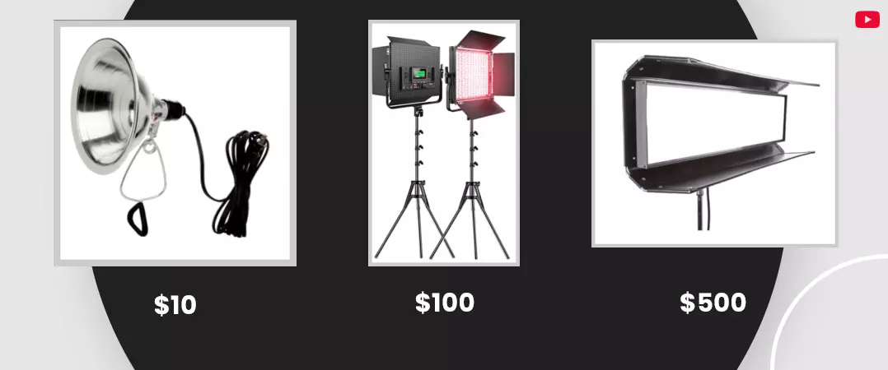
The low-range lighting options
Cheap clamp lights (@$10) are versatile and can be mounted in a variety of ways. Tactlessly, the lack of dimming control and diffusion can lead to harsh brightness. Light with not any filter is identified as hard light. Ponder of the difference between a lamp with a naked bulb and one with a lampshade. Deprived of the shade, it’s brighter, and the light can be harsh and cast deep shadows.
Diffusion helps binge light uniformly, creating soft light, and can be improvised even on a budget. Hence, when using clamps lights, we highly recommend using some type of diffusion material.
You can buy diffusion paper and cover it over your lights, or even cut up a frosted shower curtain. Feel free to get imaginative!
These lights can also be sprung off a surface like a wall, ceiling, or reflector to create soft light, which is expressively more preferable to blinding your subject and creating an unflattering image.
Cheap video lights also include CFL bulbs, which output a soft, cool light.
Fancierstudio’s three-point lighting kit is a noble, under-$50 option, and includes translucent umbrellas to aid diffuse the light, plus stands, CFL bulbs, and a case.
An affordable entry into LED lighting options, Neweer’s Studio Lighting Kit includes two dimmable 160-LED light panels with stands, filters, and batteries. LED lights are also energy resourceful, long-lasting, lightweight option that, like CFLs, provide soft, cool-toned lighting.
If you want the diffused light that softboxes provide, this $99 lighting kit from StudioPro is a well-reviewed option for a two-point setup.
Mid-range video lighting alternatives
If you’ve got the budget and space, you can consider getting a softbox. You can go with Aputure 120d II with a light dome. This is a go-to lighting setup for many YouTubers, and for an upright reason. This rig is abundant for shooting portraits, headshots, and interviews because it places out beautiful, soft light that cloaks around the face. This light is very gratifying, and it creates nice, natural catchlights in your eyes.
You can buy purpose-built studio lights for $100-$500 with the whole shebang you need to set them up. But not everyone has the space to fill a room with colossal lights. A prodigious compact option is Lumecube. The light is trivial enough to get assemble on your desk but has more progressive features like adaptable brightness and colour temperature. If you’re shooting videos at home or at your office desk, Lumecube is a boundless way to get balanced light without a lot of aggravation.
For a three-point softbox setup, StudioFX’s kit is a worthy choice, with three lights, adjustable stands with affluent arm, and fluorescent daylight bulbs, for around $125.
A favourite of beauty and makeup vloggers, YouTube ring light or “Diva” lights create an extraordinarily satisfactory shot cheers to the huge bulb. Another option is a higher-end LED panel optionthis kit from GVM this kit offered by GVM includes three LED panels, remote control, and a heap of other features. The panels are dimmable and the colour temperature can be accustomed cooler or warmer, contingent to your requirements.
High end alternatives
In the higher price range of video lighting kit options, you’ll possibly pay as much for one light as you would for a whole studio lighting setup.
You can buy the Arri kit"which includes three 650-watt Tungsten lights, coloured filters, and cowshed doors to switch and diffuse light output, a wheeled case and stands.
You can get more extravagant features, such as full-range dimmers, wireless control, aptitude to change colour on the fly, better diffusion, and sturdier output. If you plot to shoot high-end camera video on a consistent basis, it may be worth the higher price.
3. Set an apparatus of three pointing light
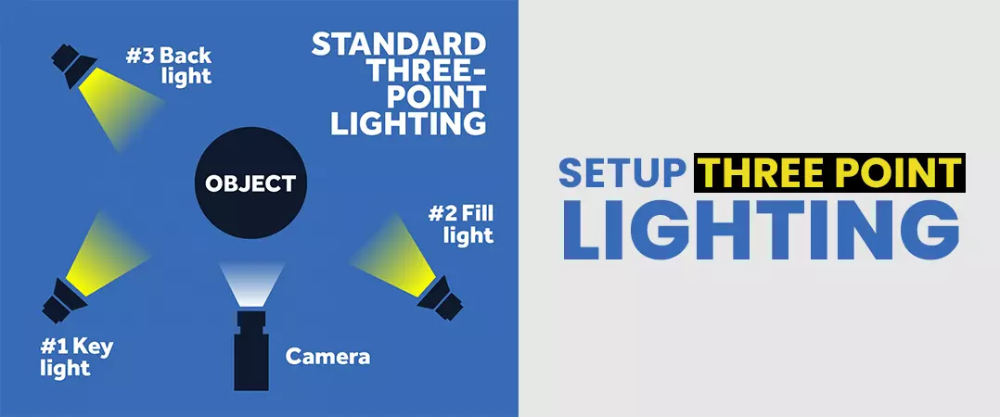
The most communal & classic format for lights is called three-point lighting sources. It comprises of a key light, a fill light, and a backlight.
Envisage that your subject is at the centre of a clock, with the camera at six.
Key light:
the main light, generally placed off to one side of the camera. This light is located roughly at four. It should be the brightest of the three and delivers the bulk of light to your subject.
Fill light:
a diffused light that should be placed approximately at eight, as it eliminates shadows caused by the key light. Your fill should be about half the intensity of your key so that it still abolishes shadows, but doesn’t harvest a flat-looking shot due to the fill and key lights toning too narrowly. You can position yourself next to a white wall or set up a reflector. If the wall or a reflector isn’t providing enough fill, you can always use one of the small LEDs as a fill. Since these lights can dim down unbelievably low, they work impeccably as fill lights.
Back light:
a light that splits the subject from the background. It is located somewhere between one and two, separates your subject from the background. These lights are specifically essential when your clothes or hair are mixing into the background.
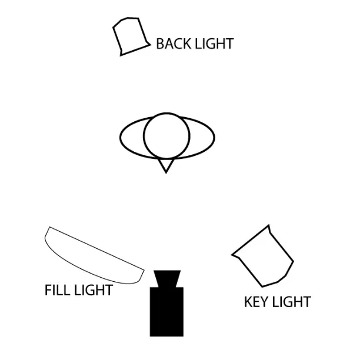
Image source- Creator Academy
Once you’ve strong-minded your video lighting setup, you can add more apparatuses to achieve the envisioned effects. For example, some YouTubers use a “soft box”, which is an accessory for a light fixture that diffuses the light and makes the source larger.
Beauty vloggers every so often use a YouTube ring light because it offers uniform light from the camera’s point of view. This transports a soft radiance along the boundaries of the face, which tends to be satisfying.
4 .Select your light colour temperature
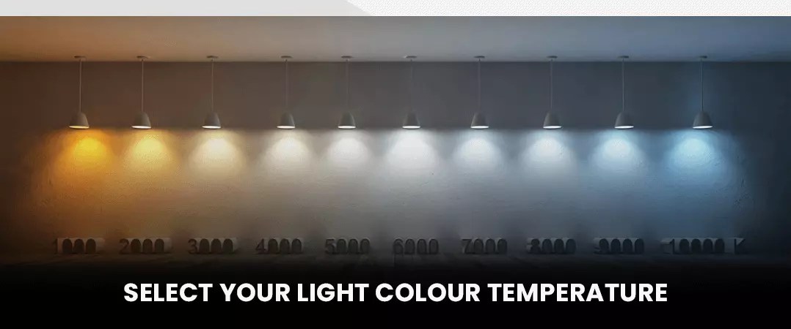
Grounded on the type of bulb, lights can look “cooler” or “warmer” on camera. The human eye distinguishes this difference, too.
Ponder how a doctor’s office looks (cool luminous light) compared to a contented living room setting. Warmer light characteristically has more yellow colour, which cooler light has more white or light blue tenors.
Note-it’s superlative not to mix lights of different colour temperatures. We suggest getting a daylight colour bulb, which is around 5000K.
5. Look out for shine/glare

Glare on glasses can be a serious issue, particularly with equipment that has harder, more direct light.
You can fix it by hovering up your lights higher on their stands. If raising the lights doesn’t aid, try shifting your key and fill lights farther out, while keeping them relatively equal to one another.
6. Best Types of video light for YouTube Videos
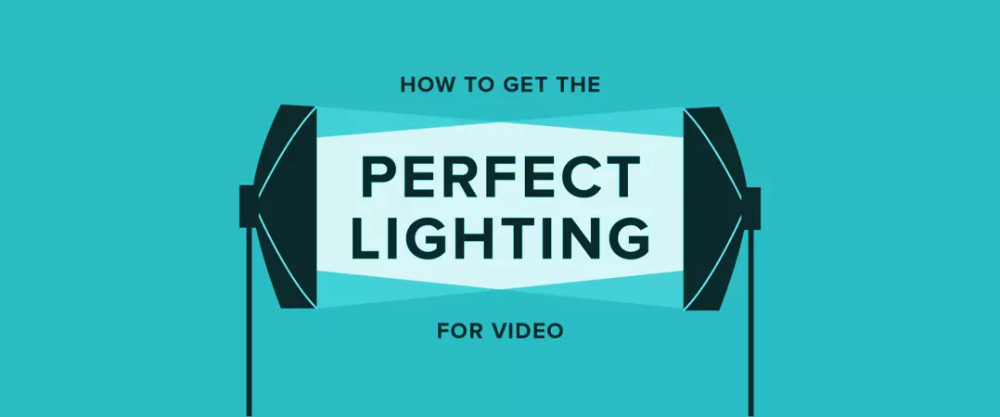
Softbox lighting-
It emulates natural light approaching from a window, which makes it perfect for frontal lighting. Its wide-ranging coverage makes it great for softening shadows and lighting up the zone where it’s placed.
YouTube ring light-
This flair of YouTube lighting is the go-to setup for beauty and makeup vloggers. The ring light is a lightbulb or panel that is shaped in a ring form, and it’s prevalent because it creates an even, pleasurable light all around your face.
LED Lighting-
They consist of a single panel with heaps of individual LED bulbs set into it. They are very tranquil to set up and take down and can be effortlessly transported. They also have the benefit of staying cool while you’re using them.
3 Point Lighting (Ring Light and LED Lighting)-
As mentioned above, a good setup for YouTube lighting is called “3-point lighting” because it’s made up of three lights – the main light, the fill light and the background light.
I hope you found to understand how to get the perfect YouTube lighting for your videos.
Feel free to be creative and do share!